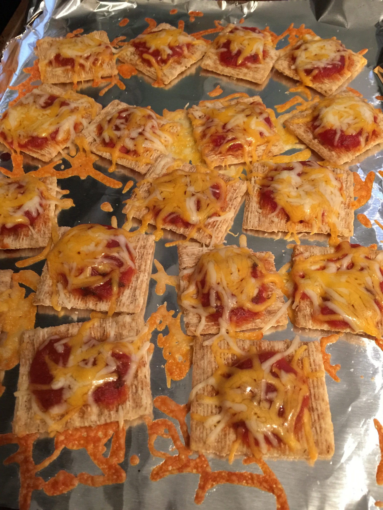

Triscuit Pizza

Description
These little guys are great for a quick bite, or for a late night snack. Small, portable, and tastey, they are sure to become a classic in your house!
Ingredients
- Triscuit cracker
- Bottle of pizza sauce
- Sliced or shredded cheese of choice
Steps
- Place crackers on baking sheet or microwave safe plate
- Add a dollop of pizza sauce on top of crackers
- Place cheese on top of pizza sauce
- Bake for 5 minutes at 350F or microwave for 1 minute